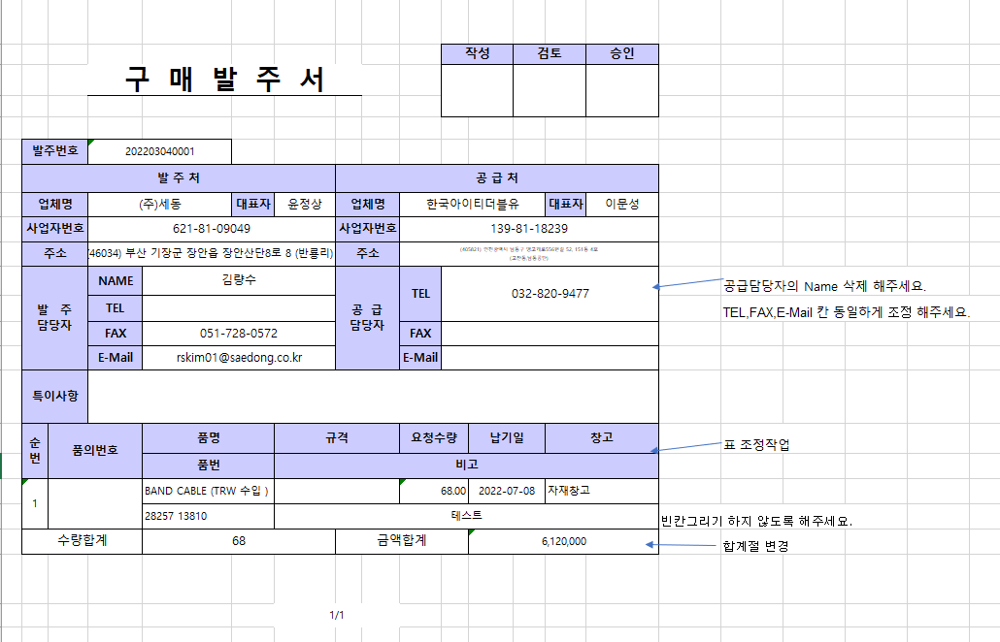
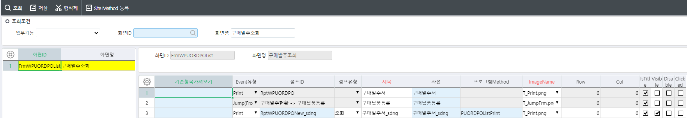
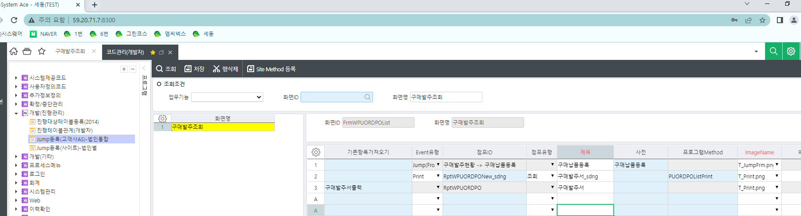

3/24 - 표준 출력물 가져오기 (세동)

1. 구매발주서 표준 양식 기준으로 수정 요청합니다.
(1) 공급처의 Name 삭제
(2) 시트의 단위, 단가, 금액 제조사 삭제
(3) 빈칸그리기 하지 않도록 변경
(4) 합계절 변경
FrmWPUORDPOList - 구매발주조회
구매발주서출력 => 점프화면 : RptWPUORDPO
==> 점프화면 : RptWPUORDPO_sdng
구매발주서_sdng
표준 출력물 위치
D:\KsystemDEV_wk_CS\FileService\SetupClient\Report\OZ
세동 서버 출력물 위치
C:\ksystem\oz70\repository_files
D:\KsystemAce\proas\ProAS\ksystemsdngtest\FileService\SetupClient\Report\Oz
=====================================================================================================================================================================================================
표준 출력물 수정 2가지
1.sp 수정안할때
그냥 ozr의 이름만 바꿔서 양식 수정후 업로드
aa.ozr => aa_sdong.ozr => 표준누르면 자동으로 사이트 붙은 ozr파일 인식
=> 원격 들어가서 파일 넣기 or 패치
=> 소스세이프는 무조건
2. 만약에 안되면
표준화면에 점프등록으로 단다
3개 모두 이름 수정 (노트패드도 수정)
코드관리(개발자) -개발(진행관리) - Jump등록(고객사AS)-법인통합


Site Method 등록 => 등록한 메소드를 프로그램Method 컬럼에 추가
처음만든다하면
화면에서
툴바, 메소드, 비즈니스, SP
cs
프로그램등록 Rpt\~\~~ 등록 (저장)
SP를 작성
잘되면 소스세이프에서
XML 따오기
XSD => ODI => OZR 출력물만들기
Qty, QRCode, ItemNo
ODI,OZR,ZIP 소스세이프
패치 할때 프로그램 비즈니스 SP Rpt\~\~~
xml xsd
ozr
odi
zip
프로그램
메소드